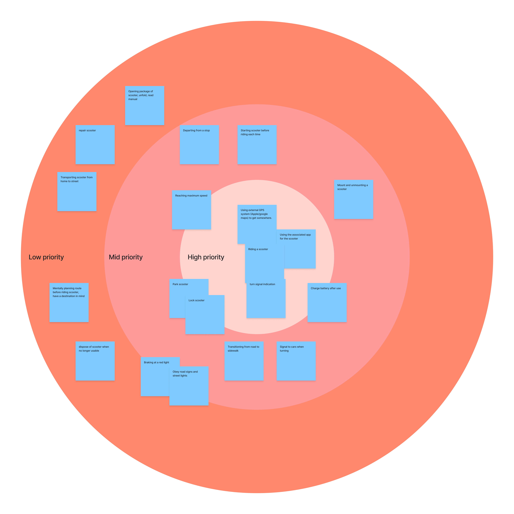
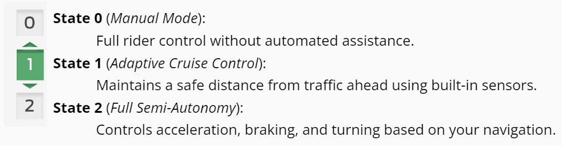

Micromobility vehicles, like bikes, scooters, and mopeds, have gained popularity for reducing transportation's environmental impact. Ford Motor Company is exploring semi-autonomous electric scooters to lower gas emissions and tasked my team with designing such a device. Our primary concern is safety, leading us to ask:
How can we develop a semi-autonomous electric scooter that prioritizes safety while addressing the functionality and usability concerns of current models?
Solution
We designed and developed a new level of interaction through our innovative and practical solution for semi-autonomy, by offering a new physical dashboard and a corresponding mobile app that effectively tackles the numerous concerns associated with existing e-scooters.
Our semi-autonomous e-scooter comes with two new solutions: an upgraded scooter with a new dashboard that provides seamless integration with our second solution - a mobile app. Our solutions aim to enhance safety in transportation while catering to the needs of our digital age, where mobile phones are extensively utilized.
My Role
Lead UX Designer, UX Researcher
Timeline
Aug. 2023 - Dec. 2023
Team Members
Michelle Dang (UX Designer), Alex Pravat (UX Researcher & Designer)
Client
Course Project Given by Ford Motor Company
Tools
Figma, Physical Tools
Regulated Autonomy
The mobile app's role with the physical dashboard highlighted and regulated semi-autonomy.
Semi-autonomy functionality on the e-scooter would be disabled if the user decides to not open the app or place their phone on the physical dashboard. For semi-autonomy state 2 or higher, the users would need a destination in order to control itself and provide safety notification when autonomy would fail.
Safety Interruptions
Preparing use takeovers during failed autonomy to ensure users can regain control and navigate to safety.
Our semi-autonomy uses multiple modality of grabbing the users attention such as flashing red on the digital app, vibrations on the physical dashboard, and a countdown of when to take over.
Integrated Relationsship
Clear and intuitive communication between mobile app & physical dashboard.
We aimed to create a user-friendly system where the transition between app navigation and physical control is effortless, reinforcing the connection and usability of both platforms
Our Process
My Contribution
As the lead User Experience Designer & User Researcher on the team, I created the 3 design principles that we needed to address through out design process.
I collobrated with the two other designers on my team to create low-fi mockups and made a research informed decision about the end goal of our product.I created and advocated for the new interaction paradigm between the electric scooter and mobile app which was ultimately decided to be used as the final product.
Research
Guerilla Research
We began by analyzing the capabilities of existing e-scooters, examining their strengths and weaknesses. This led us to consider what features were missing and which aspects could be innovated upon to create a groundbreaking product. Instead, our guerilla research showed us something different: Users weren't seeking groundbreaking features; they desired a more fundamental experience - something focused on core functionalities. At the same time autonomy was an afterthought. Users couldn't imagine how it'd be helpful.
Affinity Diagramming
Conflicting responses was our biggest challenge from user research. Some users wanted a phone holder, while others preferred a minimalist design with minimal display. Similarly, some navigated without relying on tools like Google Maps, while others found such navigation essential.
The conflicting feedback highlighted the importance of understanding and prioritizing needs. During affinity diagraming, we recognized the impossibility of fulfilling every desire users had and the critical need to make decisions that would ultimately lead to a successful autonomous e-scooter.
Prioritization & Task Analysis
In order to prioritize user needs, I advocated for a bullseye method to determine what functions and features would be promiment in our autonomous scooter.

To understand our users challenges further and make clear decisions on our e-scooter, we created task flows that would allow us to visualize how our users with interact with our e-scooter. By analyzing our task flows, we identified areas where semi-autonomous features could enhance user experience
Key Insights
Based on all of our research methods, we identified 3 key Insights to fuel our ideation process:
Using, changing, and disabling autonomy should be easy and prominent for users safety
If a mobile app were to be used, the app should try to reduce distractions to the user, except for notifying them about potential issues related to the e-scooter
There has be a clear match between the physical dashboard and any other device, along with a seamless integration of the two.
Design
Physical Dashboard
We started by imagining what the physical dashboard would look like and what type of experiences it'd afford to users. On top of getting users from A to B, we knew the importance of the mobile device as it'd be used to show safety-critical information to users during the use of autonomy. We created the following sketches of what the physical dashboard could potentially look like.
Early Wireframes
After deciding on the form factor of the physical dashbord, we started sketching up how the mobile app would look and feel and provide users the time-critical information that they needed during trips. we also knew from our research that Google Maps was a largely utilized app for getting around on a scooter.
Digital Wireframes
Once happy with our early sketched ideas, we moved on to digital wireframes.
High Fidelity Wireframes
With our high fidelity wireframes we prototyped key components of what makes our semi-autonomous electric scooter, StreetSmart, safety-centered and valuable.
2 Different States of Autonomy
Once the mobile device is securely mounted on the scooter and the app is open, users can toggle the autonomy selector located on the left handlebar to cycle through various states.State 0 enables full user control, while States 1 and 2 offer different levels of autonomy. Each state provides necessary safety notifications, cl`y indicating the functions and benefits of the selected level of autonomy.

Practical All-in-One Semi-Autonomous E-Scooter
StreetSmart is a practical and easy to use e-scooter that offers seamless integration of semi-autonomous features, enhanced safety and convenience for users. It's design addresses common concerns of traditional scooters while offering advanced functionality tailored to modern transportation needs.
Feedback
Usability Testing
As we implemented adjustments to our prototypes, we conducted small-scale testing to gauge how intuitive our digital experience became for the users.
First, the lack of labels on the physical dashboard prompted some user confusion about what each toggle does.While many of the controls were carried over from the existing e-scooter paradigm, they still needed labels for users who have never ridden a scooter before.
Next, feedback on the digital interface focused on affordances and feedback. What is interactable? What is just informative? To differentiate between these elements, we used rounded corners to signify an interactable element (such as media controls), while square corners displayed pertinent information (semi-autonomy selector).
Lastly, users reported that the "Autonomy Level Changed" notification obstructed their view of the map each time they switched autonomy levels. To address this concern while still informing users of autonomy level changes, we decided to include this information within the state change column. This solution prevents view obstruction and creates a more cohesive look.
While we had many additional changes we wanted to implement based on user feedback, the ones mentioned above were among the most critical. Given more time, we would incorporate many more improvements.
Reflection
I was thrilled to innovate in the micro mobility space after seeing the massive success of electric scooters and e-bikes across the nation and in Europe. Defining a new interaction paradigm however, was challenging. Navigating through conflicting feedback from user testing was a critical learning curve, since our participant panel varied in each persons familiarity with electric scooters. Balancing a new technology (semi-autonomy) with a mobility method that was already new to some was tricky. It required a careful consideration of what features to include, and what to leave out. This process honed my decision-making skills and taught me the delicate art of compromise in design.
My teammates - Alex Pravat on the left, me in the middle, Michelle Dang on the right. Loved you guys!